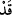
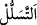
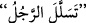
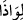
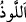

olduğundan Allah Teâlâ O’na saygı ve tâzim gösterilmesini emretmiştir. Bunda üstâzın
hakkının ve fazîlet ehlinin hakkının tanınması söz konusudur.”
Baklî’nin Hakâik’ında der ki: “Rasûlullah (s.a.)’e ihtiram, Allah’a ihtiramdır. O’nu
tanımak Allah’ı tanımaktır. O’na ittibâda edepli olmak Allah’ın yanında edebli
olmaktır.”
et-Te’vîlâtü’n-Necmiyye’de ise şöyle der: Âyet, meşâyıha tâzime işâret etmektedir.
Çünkü “kavmi arasında şeyhin durumu, ümmeti içinde peygamberin durumu
gibidir.”[190] Dolayısıyla şeyhlere hitâb ederken saygılı olun, hizmetlerinde edebi
koruyun, saygı ve hürmete riâyet ederek tâatlerine bağlanın.
“İçinizden birini siper edinip sıvışıp gidenleri muhakkak ki Allah bilmektedir.” Bu
ifâdenin başındaki “__WORD__” edâtı, sıvışanları tehdid mânâsını gerektirmesi için istiâre
yoluyla tahkîk/teyid anlamında kullanılmıştır. el-Kevâşî’de der ki: “Burada “__WORD__” edâtı,
sıvışanların sayılarının az olduğunu bildirir. Çünkü onlar, diğerlerine göre daha az
idiler.”
“__WORD__, insanların arasından gizlice ve yavaş yavaş çıkmak demektir. Bir kimsenin,
insanlardan fark ettirmeden ayrılmasını ifâde etmek için __WORD__ tabiri kullanılır.
Âyetin mânâsı, Allah azar azar gizlice topluluktan çıkıp ayrılanları bilir, demektir.
el-Vasît’ta ifâde edildiğine göre “__WORD__, birinin kendisini görmesinden korkarak bir
şeyle örtünmek/gizlenmek demektir. el-Kâmûs’ta ise şöyle der: “__WORD__ bir şeyle örtünüp
korunmaktır”
Buna göre mânâ: Çıkıncaya kadar bazınız bazınızın arkasında gizlenerek veya izin alıp
çıkan biriyle onunla berabermiş gibi göstererek sıvışarak, demektir.
Bu sıvışma, savaş safından, cuma günü mescidden ve benzeri toplantı yerlerinden
sıvışmanın hepsini içine alır.
Bazıları demişlerdir ki: Cuma günü Rasûlullah (s.a.)’in hutbesi münâfıklara ağır
geliyor, sahâbeden bazılarını veya birbirlerini siper ederek, izin istemeksizin gizlice
mescidden çıkıyorlardı. Allah Teâlâ onları şu âyetle tehdid etti:
“Bu sebeple,” gereğini yapmamak ve gittiği istikâmetin tersine gitmek sûretiyle
“onun” yâni gerçek emredici olan Allah’ın veya burada bahis konusu olan Hz.
Peygamber (s.a.)’in “emrine aykırı davrananlar, başlarına bir belâ” yâni dünyada
beden, mal veya çocuklarına hastalık, ölüm, helâk ve sultanın tasallutu gibi bir belânın
“gelmesinden veya” âhirette “kendilerine çok elemli bir azâb isâbet etmesinden
sakınsınlar.”
Kâşifî der ki: “Onlar ya kalplerine gaflet mührü vurulmasından veya tevbelerinin
kabul edilmemesinden sakınsınlar. Cüneyd (k.s.) şöyle buyurur: Fitne, kalbin katılığıdır
ve ilâhî ma‘rifetten müteessir olmamaktır.”
el-Celâleyn’de şöyle der: “Başlarına” nifaklarını ortaya çıkaracak “bir belâ
gelmesinden veya kendilerine” dünyada âcilen “çok elemli bir azâb isâbet etmesinden
sakınsınlar.”